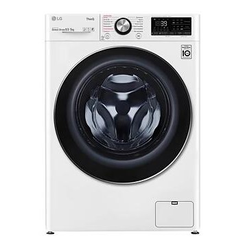

Стиральные машины
Стиральная машина LG AIDD F2V9GC9W
Узкая стиральная машина с технологией AI DD и функцией сушки, 8,5/5кг
Характеристики товара
- Интеллектуальная система AI DD™
- Ускоренная стирка TurboWash™360
- Стирка и сушка 2 в 1
- Функция пара Steam+™
- Увеличенная загрузка
- Wi-Fi и управление через смартфон с приложением LG ThinQ
Подробное описание товара
В память стиральной машины заложена база данных из 20 000 возможных сочетаний тканей. Анализ этих данных позволяет подбирать свой алгоритм стирки для каждого типа белья. Как результат — высокое качество стирки и на 18% меньше повреждений ткани.
Интеллектуальная система определения типа ткани AI DD™ способна распознавать не только вес, но и характеристики ткани, такие как плотность и мягкость, с точностью подбирая оптимальный алгоритм стирки.
ЦЕНА 62 990 ₽